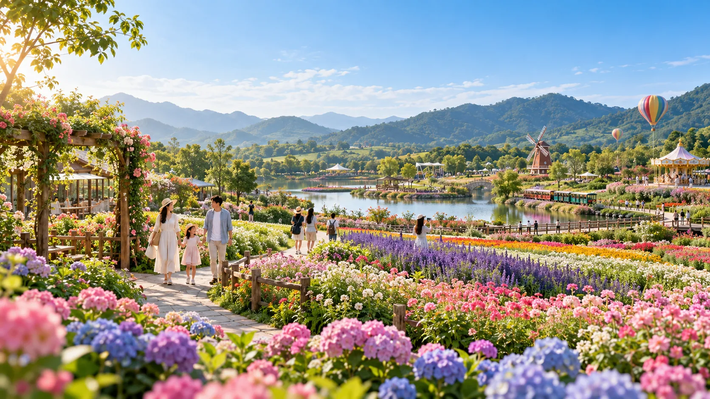
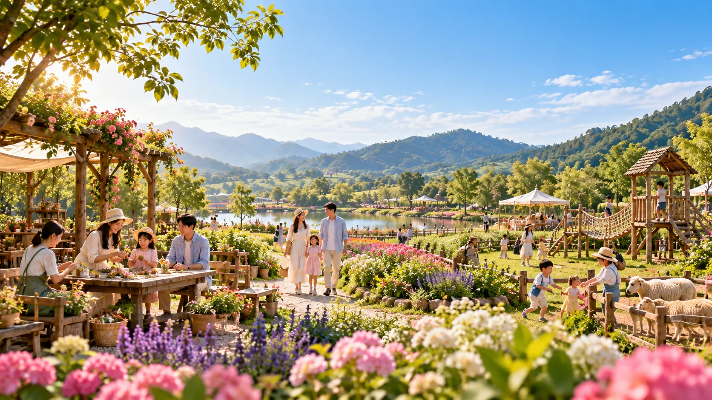
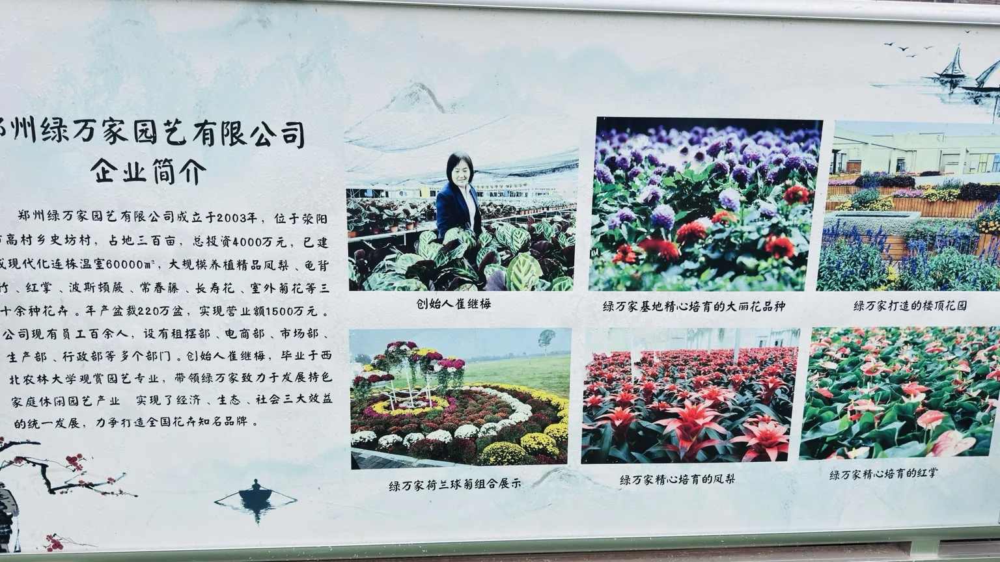
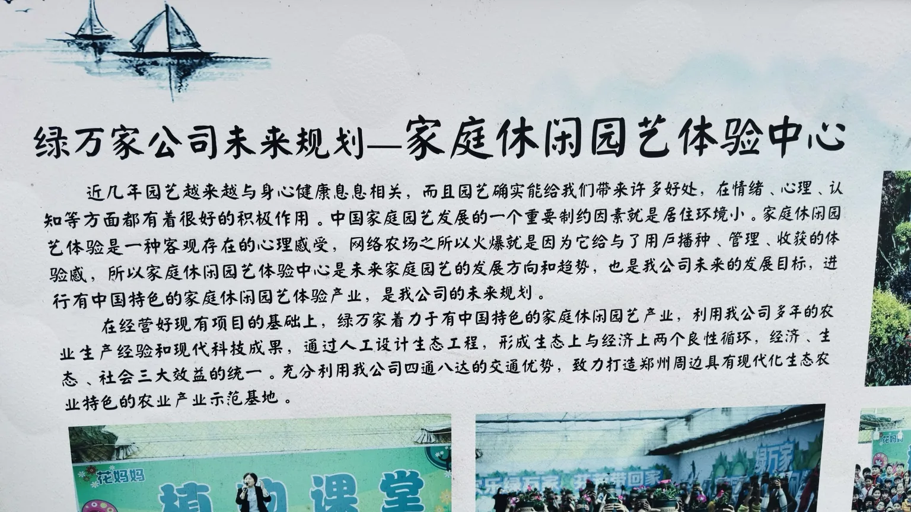
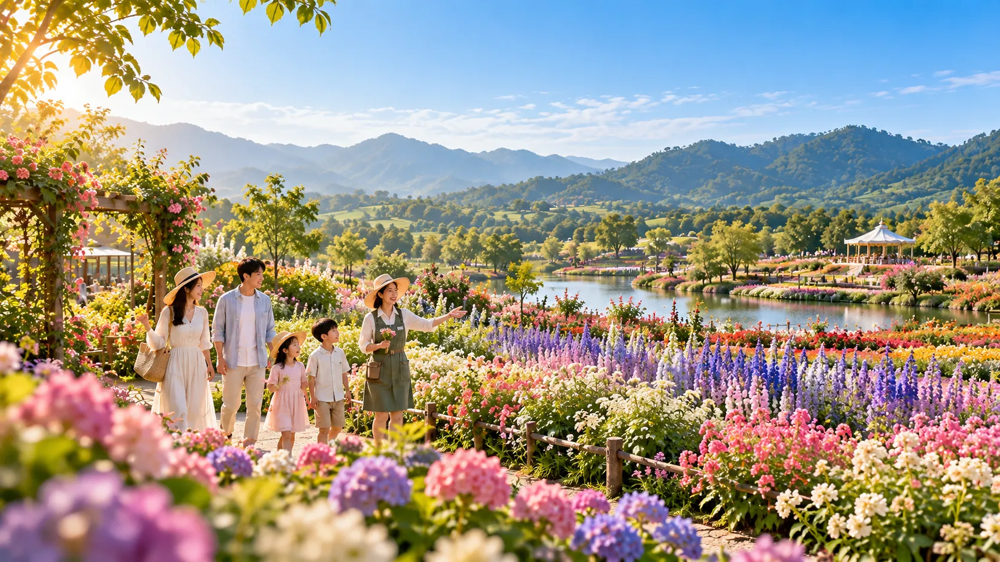
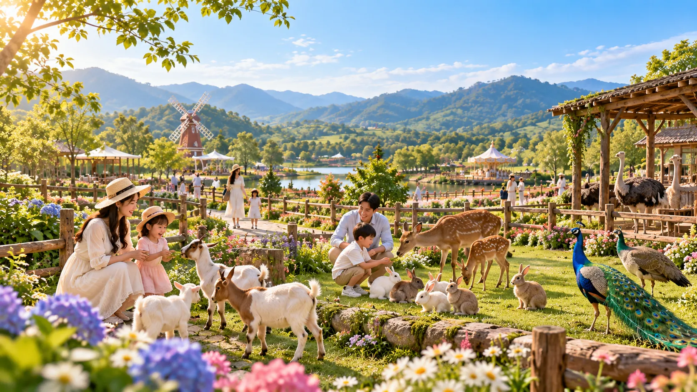
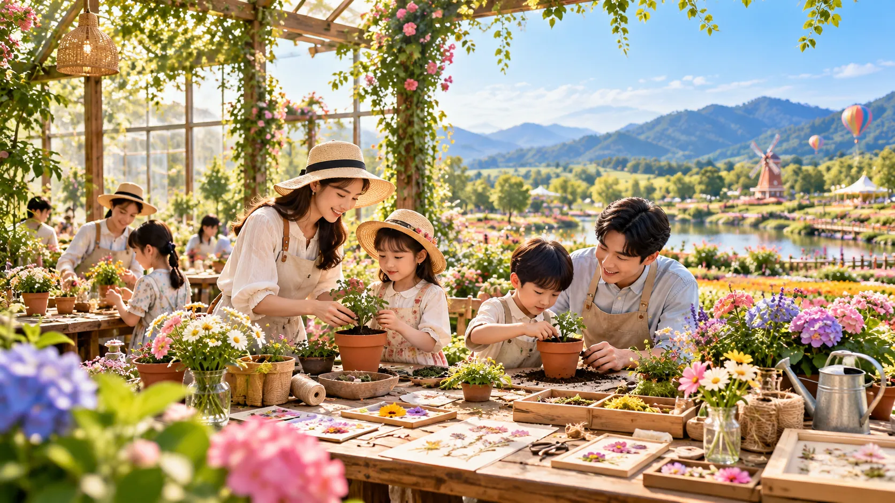
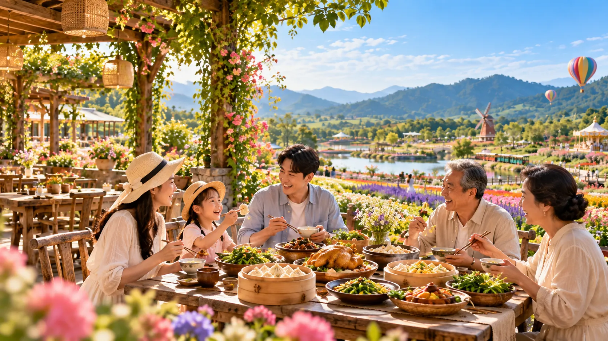
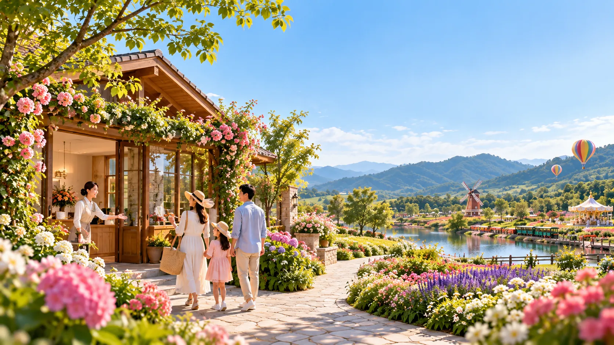

河南省科普教育基地
照片所示认定期限：2024—2028年
以展示牌匾及认定信息为准
ZHENGZHOU · XINGYANG · IN NATURE
把日子过进花里，把快乐还给自然。
赏花 · 萌宠 · 手作 · 游玩 · 农家美食 · 团建
这里不只是一个赏花的地方。你可以和孩子亲近小动物，亲手种下一株植物，和朋友玩一场游戏，也可以围坐在一起，吃一顿热热闹闹的农家饭。

绿万家花妈妈生态游乐农场，延续着郑州绿万家园艺有限公司多年的园艺积累。据现场企业介绍展板记载，公司创立于2003年，位于郑州荥阳，基地占地约300亩，开展花卉种植、观赏植物培育等业务。
从植物生产到自然科普、园艺课堂、亲子游玩与团队活动，我们希望让园艺不再只是远远观赏，而是每个人都能亲手参与的生活体验。
以上公司成立时间、基地规模来源于现场历史介绍展板，仅为展板资料介绍，不代表对当前经营规模作实时核验。

真实拍摄 · 点击查看原图 ↗
现场规划资料 ↗现场的“家庭休闲园艺体验中心”规划展板，提出把种植、管理、收获的体验融入家庭休闲园艺。这份方向，也呼应了今天农场的自然课程、亲子活动与生态游乐体验。
说明：该图片展示的是企业规划理念，不代表所有规划项目均已建设落地。从园艺生产到科普教育、校外实践与产教合作，绿万家相关基地和企业获得过多项认定与授牌。下面的信息根据本次提供的现场荣誉墙照片整理。
照片所示认定期限：2024—2028年
以展示牌匾及认定信息为准照片所示认定期限：2023—2027年
以展示牌匾及认定信息为准荣誉墙展示了校外实践教学基地、校外劳动教育实践基地等相关授牌。
见下方真实图片照片中可见花卉生产产教融合实训基地授牌，及相关行业与教育实践荣誉。
见下方真实图片以下均为你提供的真实照片，点击任意图片可放大查看原始资料。
展示说明：荣誉名称和期限按现场照片中可辨认的信息整理。部分历史授牌已有明确有效期，例如“郑州市林业产业化重点龙头企业（2023—2025年）”，仅作为历史荣誉展示，不代表目前仍在有效期内；各项荣誉与认定以颁发机构的原始文件及最新公告为准。

AI 创意示意 · 待替换实景穿过花田小径，看看花朵、认识植物，跟着讲解听一听花草的秘密。在轻松的游园过程中，让孩子在观察中学习，也让大人在自然中放松。

AI 创意示意 · 待替换实景小羊、小兔、鸵鸟、孔雀、小鹿……一群动物朋友，给农场增添了无数惊喜。带着孩子走近它们，观察它们的生活，感受自然与生命的美好。
放下屏幕，把快乐交给奔跑、探索和笑声。
攀爬、秋千、滑梯、飞椅、沙滩寻宝、射箭，还有适合家人朋友一起参与的休闲活动。

AI 创意示意 · 待替换实景一片叶子、一朵干花、一株幼苗，都能成为创作的起点。从植物盆栽、手绢与挎包拓印，到干花DIY、花环和扦插，亲手完成一件独一无二的作品。
从农家地锅鸡到羽衣甘蓝特色饺子宴，热乎的饭菜，就是农场最温暖的待客之道。

AI 创意示意 · 菜品以实际出餐为准地锅鸡、羽衣甘蓝饺子宴、砂锅土鸡宴，适合亲朋好友围坐分享。
¥168—¥330四菜一汤盒饭、八凉八热桌餐、大锅菜，满足不同团队用餐需求。
¥15 起包羽衣甘蓝饺子体验25元/人、不限量；也可选择25元一份约20个饺子。
¥25走出会议室和教室，在自然里打开不一样的相处方式。拔河比赛、一圈到底、小鸡下蛋、毛毛虫大战……让大家在游戏中协作，在欢笑里拉近距离。
上述团队游戏、K歌、棋牌为免费项目；如需要带队服务，可自选教练与导师。
一群人来的时候，也可以轻松组织。不同规模、不同需要，都能灵活选择。
每50人配1名教练、1名导师。
按班级配置导师，适合需要现场组织的团队。
仅支付所选课程费、餐费；课程费用已经包含课程导师。
所有项目价格公开展示，按需选择，团体可咨询具体活动安排。
价格依据农场提供的项目表整理。部分课程、团餐、活动请提前咨询安排；实际可参与项目及费用细则以农场确认为准。免费项目可能受天气、场地及现场安排影响。

AI 创意示意 · 待替换实景花开的时候来，想放松的时候来，
想和喜欢的人一起玩的时候，也来。